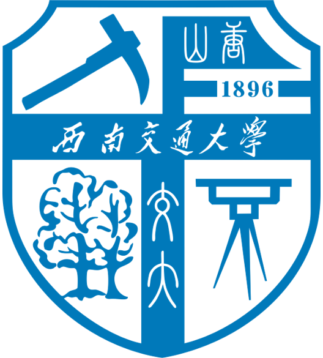

BEng Mechanical Engineering @ University of Leeds

BEng Mechanical Engineering @ Southwest Jiaotong University
Expected Graduation: Jun 2027
The convergence of Embodied AI and Surgical Robotics is rewriting what machines can do in an operating room — pushing the field from rigid, operator-bound tools toward systems that learn, adapt, and act with genuine surgical intent. I want to engineer that shift: designing soft, multi-DoF platforms and training them through imitation learning, reinforcement learning, and world models to perform with expert precision wherever that care is needed most.
Making the most advanced technology affordable and accessible.
National Scholarship
SWJTU | Ministry of Education, China
National Scholarship
SWJTU | Ministry of Education, China
Hong Kong SAR | The Chinese University of Hong Kong | SURP 2026 | Undergraduate Research Intern
Summer research at the Surgical Robotics and Instrumentation Laboratory (SRIL), supervised by Prof. Shing-Shin Cheng and mentored by Dr. Jun HUO, working toward an imitation learning framework for flexible surgical robots — currently focusing on hybrid control of a cable-driven continuum surgical robot.
Chengdu, CHINA | SWJTU-Leeds Joint School
Independently developed an enhanced YOLOv8n algorithm integrating a P2 detection layer, Non-Local Block attention, and BiFPN for complex underwater environments to improve marine benthic organism detection for superior feature extraction and robustness, outperforming baselines with minimal complexity.
Hangzhou, CHINA | KNEWBOTS
Conducted production-level calibration and large-scale regression case testing (600+ metrics) of multi-sensor SLAM systems on Autonomous Mobile Robots. Diagnosed hardware perception failures and addressed deployment-stage edge cases in multi-sensor fusion and loop closure.
Leeds, UK | MECH2636 Assignment 3 | Developer & Modeler
Developed a MATLAB Inverse Kinematics solver and coordinate transformation framework for a 2-DOF robotic arm in a colonoscopy simulator. Engineered a full-stack simulation to validate reachability and automate data pipelines for C++ embedded integration. In the final inter-team trial, our system completed the Zone 1 navigation task in 24.3 s, placing 3rd.
Leeds, UK | MECH2636 Assignment 2 | Control Systems Developer & Embodied Systems Engineer
Engineered a C++ embedded control architecture featuring a Finite State Machine and PI velocity controller for an autonomous delivery buggy. Validated on ReLOAD platform, optimizing PID gains and sensor placement to mitigate wheel slip and divergence and ensure precise payload delivery. Our team ranked 1st out of all competing teams in the final competition.
Chengdu, China | MECH1010 Coursework | Control Hardware & Software Developer
Developed an autonomous UAV altitude control system using Arduino and C++, achieving stable hovering within ±0.02m via optimized PID parameters, integrating full-stack hardware and telemetry log analysis.
Chengdu, China | MECH1206 | MATLAB Modeler & Analyst
Developed a 2D truss bridge mathematical model using engineering statics and solved a 24-Equation Matrix via MATLAB for load simulation. Created a MATLAB GUI to visualize empirical correlation, successfully predicting vulnerable components and maximum load capacity.
Chengdu, China | Student Research Training Program | Designer & Hardware & Embodied Developer
Developed a Raspberry-Pi driven smart cart integrating vision and weight sensors, using an MSDA-enhanced YOLOv8n backbone to achieve 92.4% mAP. Designed a 2-DOF pan-tilt laser pointer feedback mechanism to physically indicate non-recognized items.